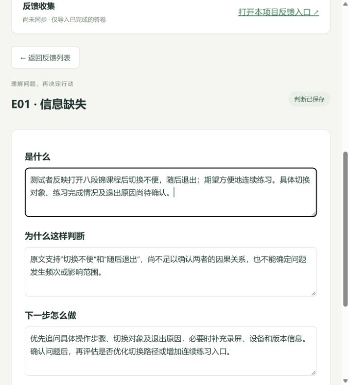

开源项目 · AI辅助分析 · 人工审核
回声
让反馈成为有依据的下一步
把零散反馈整理为可核对的判断，再形成可跟踪的改进事项。AI帮助梳理，用户保留最终决定。
3类场景App体验、活动反馈、内容复盘
8条 / 16项固定构造案例及预设评测判据
23项当前通过的工程自动化测试
01 / 从什么问题出发
面向同时承担产品推广、活动和内容运营的小团队。收到反馈后，运营人员仍需判断：用户明确说了什么？哪些是自己的猜测？证据够不够支持改功能？
项目目标是缩短从材料到判断的操作路径，并保留原文和人工决定。尚未通过外部访谈验证市场规模、付费意愿或效率提升。
开发与集成
业务场景与范围拆解、字段和流程设计、审核标准及迭代取舍；使用Codex辅助编码与初步评测。工作台独立开发，原型曾集成独立运行的Formbricks，没有修改其核心源码。
02 / 让判断可以被核对
收集反馈 → 保留原文 → AI分析 → 人工判断 → 待办 → 复测记录
将AI输出拆分为原文依据、信息缺口和待验证假设。程序检查字段及逐字引用，人工检查语义、因果和方案适用性。历史版本单独保留，不直接覆盖人工决定。
| 取舍 | 理由 |
|---|
| 单条分析优先 | 先验证判断质量，再考虑聚类与批量自动化。 |
| 公开演示使用历史AI结果 | 访客无需密钥即可体验审核，本地模式支持真实API。 |
| 判断卡仅保留三个问题 | 把主要操作聚焦为“是什么、为什么这样判断、下一步怎么做”；证据与历史按需展开。 |
03 / 一个真实的设计判断，基于构造案例
“点开八段锦课程后觉得切换很麻烦，后来退出了。”
AI的问题：输出“未能连续练习”，并优先解决“高频切换场景”；原文没有确认完成情况和频次。
审核后的判断：记录切换不便与随后退出，明确因果未确认。先追问操作步骤、切换对象及退出原因，再决定是否增加连续练习入口。
形成的行动：补充证据可以直接加入待办，无须先把它判定为确定的功能缺陷。该审核由AI辅助提出、用户确认，不冒充独立人工盲评。

当前可操作界面。已保存判断保留在本机浏览器，刷新不丢失。
04 / 迭代不一定意味着提升
| 相同8条案例 | v2 | v3 |
|---|
| 判据通过 | 13/16 | 13/16 |
| 平均响应 | 2.21秒 | 2.58秒 |
| 总Token | 5,460 | 7,345 |
增加提示词后，总分没有提高，耗时和Token反而增加。于是改用更容易审核的结构化输出，而非继续堆规则。v4完成4条定向回归，不能与8条全量成绩直接比较。
在后续演示中发现按钮多、信息重复和刷新丢失，进一步精简详情页并增加浏览器持久化。已验证保存与刷新行为，尚未通过用户测试证明交互效率提升。
查看原始评测记录 · 查看v4复测范围
05 / 交付与下一步
已交付三场景原型、可编辑判断卡、改进跟踪、版本对比、JSON导出、浏览器本地保存、23项测试及MIT许可源码。源码与在线演示已发布至GitHub。
下一步邀请目标用户完成同一反馈审核任务，记录耗时、实质性修订和任务完成情况。在取得对照数据前，不使用“提效30%”等结论。
3分钟演示稿 · 发布说明 · 运行方法